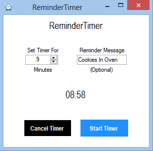

robert
adam
johnsrapid
count
Rapid Count is an iOS app I created that helps card counters practice the core technique of card counting, which is quickly associating a card with a number. The app allows the user to simulate counting down a deck of cards, and check their count at the end. In the Hi-Lo card counting strategy, cards 2-6 are given a value of +1, cards 7-9 are given a value of 0, and cards 10-A are given a value of -1. Start the count at 0. Each time you see a +1 valued card, add 1 to the count. Each time you see a -1 valued card, subtract 1 from the count. Do this until the deck of 52 random cards has completed. Note that this deck is randomly generated so the count does not have to equal 0 at the end like a physical deck of cards. The app was created using Objective-C and XCode storyboarding to manage the flow of the screens. Rapid Count requires iOS 6.1 or later to download.
reminder
timer
 ReminderTimer is a Windows application I created using C# in Visual Studio. ReminderTimer is used as an alarm with a pop-up dialog along with an audio file to notify of the timer's expiration. It can be downloaded via sourceforge.net with the provided download link shown above. ReminderTimer is compatible with Windows 7 and Windows 8.
bookmark
downloader
 BookmarkDownloader is an application I created for downloading your Chrome bookmark files to your local machine. It was created for Linux environments using Python. The program uses regex to parse the Chrome bookmark file for URLs, and then it uses wget to download all the URLs in your Chrome bookmark file. Downloading your bookmarked files to your local machine can be useful, in case you are ever offline and need to view a page, or if the website is discontinued in the future.
BookmarkDownloader is an application I created for downloading your Chrome bookmark files to your local machine. It was created for Linux environments using Python. The program uses regex to parse the Chrome bookmark file for URLs, and then it uses wget to download all the URLs in your Chrome bookmark file. Downloading your bookmarked files to your local machine can be useful, in case you are ever offline and need to view a page, or if the website is discontinued in the future.